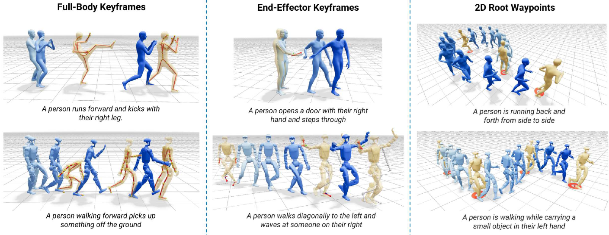

@article{rempeKimodo2026,
title={Kimodo: Scaling Controllable Human Motion Generation},
author={Davis Rempe and Mathis Petrovich and Ye Yuan and Haotian Zhang and Xue Bin Peng and Yifeng Jiang and Tingwu Wang and Umar Iqbal and David Minor and Michael de Ruyter and Jiefeng Li and Chen Tessler and Edy Lim and Eugene Jeong and Sam Wu and Ehsan Hassani and Michael Huang and Jin-Bey Yu and Chaeyeon Chung and Lina Song and Olivier Dionne and Jan Kautz and Simon Yuen and Sanja Fidler},
year={2026},
eprint={2603.15546},
archivePrefix={arXiv},
primaryClass={cs.CV},
url={https://arxiv.org/abs/2603.15546},
}